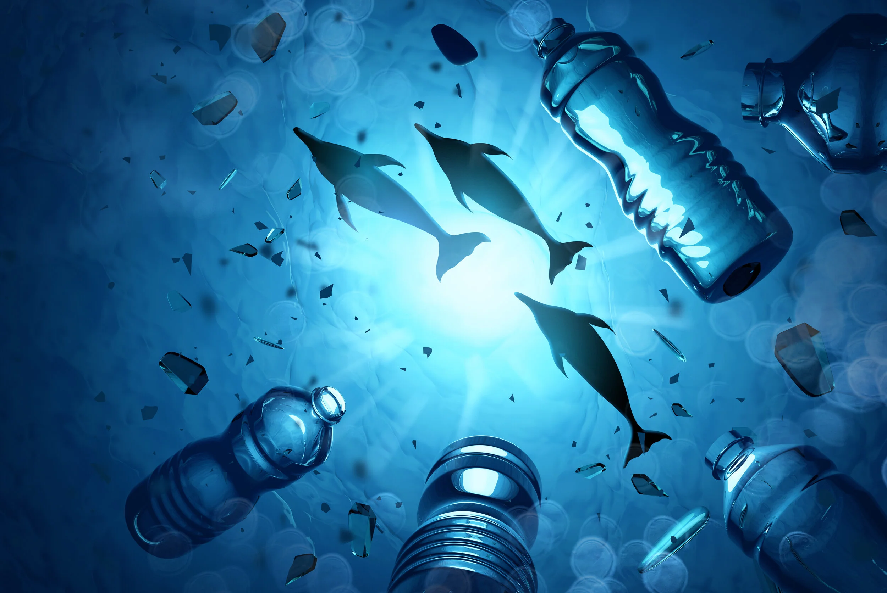
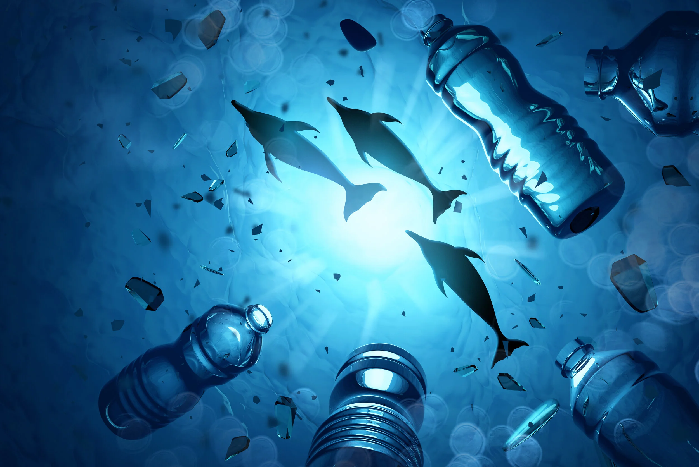
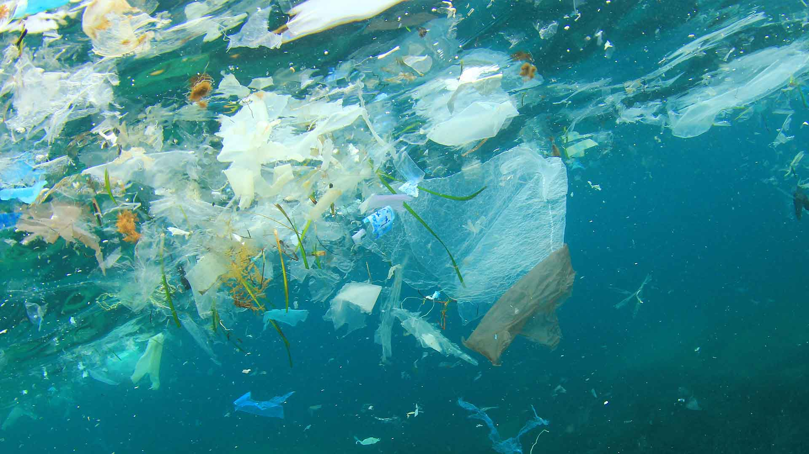
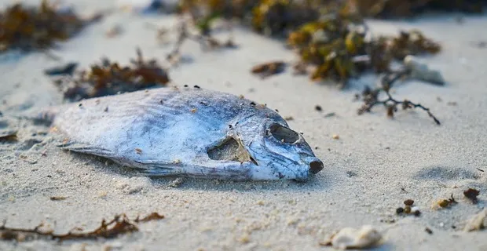
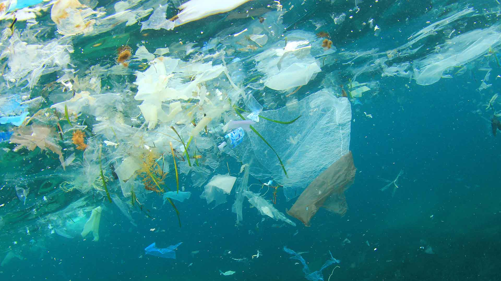
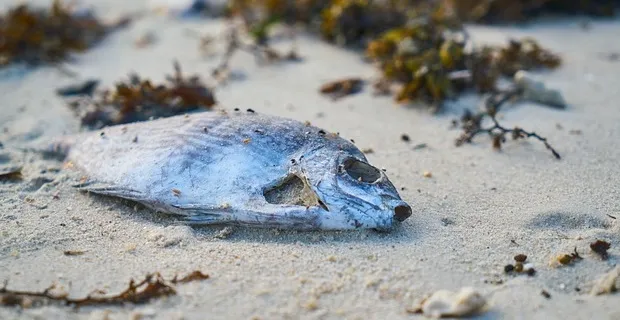
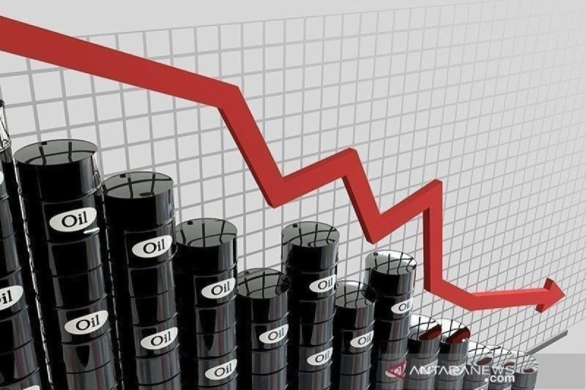

 



 Dalam beberapa tahun terakhir, kondisi laut dunia makin mengkhawatirkan. Suhu permukaan laut terus naik dan bahkan mencapai rekor tertinggi pada tahun 2024, jadi yang paling panas dalam 65 tahun pengamatan. Peningkatan suhu ini bikin ekosistem laut, terutama terumbu karang, mengalami stres panas yang menyebabkan coral bleaching besar-besaran. Laut juga menyerap banyak karbon dan panas dari aktivitas manusia, tapi efek sampingnya cukup parah. Rata-rata pH permukaan laut turun dari sekitar 8,1 pada 1985 menjadi 8,04 pada 2023, yang berarti laut makin asam. Keasaman ini mengganggu organisme yang butuh kalsium karbonat, seperti koral, moluska, dan plankton—padahal mereka itu fondasi dari banyak rantai makanan laut.
Dalam beberapa tahun terakhir, kondisi laut dunia makin mengkhawatirkan. Suhu permukaan laut terus naik dan bahkan mencapai rekor tertinggi pada tahun 2024, jadi yang paling panas dalam 65 tahun pengamatan. Peningkatan suhu ini bikin ekosistem laut, terutama terumbu karang, mengalami stres panas yang menyebabkan coral bleaching besar-besaran. Laut juga menyerap banyak karbon dan panas dari aktivitas manusia, tapi efek sampingnya cukup parah. Rata-rata pH permukaan laut turun dari sekitar 8,1 pada 1985 menjadi 8,04 pada 2023, yang berarti laut makin asam. Keasaman ini mengganggu organisme yang butuh kalsium karbonat, seperti koral, moluska, dan plankton—padahal mereka itu fondasi dari banyak rantai makanan laut.
 Masalah lain yang bikin kondisi laut makin berat adalah tekanan perikanan global yang masih tinggi. Data menunjukkan bahwa stok perikanan yang dikelola secara berkelanjutan turun drastis: dari sekitar 90% pada 1974 jadi hanya sekitar 62,3% pada 2021. Artinya, lebih dari sepertiga stok ikan sudah berada di luar batas aman karena overfishing atau pengelolaan yang kurang tepat. Dampaknya tidak hanya ikan di laut semakin sedikit, namun juga mengganggu keseimbangan seluruh ekosistem. Jika ikan kecil dan plankton berkurang, predator besar sampai ekosistem karang juga ikut terpengaruh karena mangsa mereka semakin sedikit.
Masalah lain yang bikin kondisi laut makin berat adalah tekanan perikanan global yang masih tinggi. Data menunjukkan bahwa stok perikanan yang dikelola secara berkelanjutan turun drastis: dari sekitar 90% pada 1974 jadi hanya sekitar 62,3% pada 2021. Artinya, lebih dari sepertiga stok ikan sudah berada di luar batas aman karena overfishing atau pengelolaan yang kurang tepat. Dampaknya tidak hanya ikan di laut semakin sedikit, namun juga mengganggu keseimbangan seluruh ekosistem. Jika ikan kecil dan plankton berkurang, predator besar sampai ekosistem karang juga ikut terpengaruh karena mangsa mereka semakin sedikit.
 Penurunan stok ikan turut memberikan dampak ekonomi yang signifikan, terutama bagi masyarakat pesisir dan para nelayan yang sangat bergantung pada hasil laut. Di negara berkembang, termasuk Indonesia, penurunan stok ikan dapat mengancam mata pencaharian masyarakat serta ketahanan pangan lokal. Semua kondisi ini menunjukkan bahwa laut sedang berada di bawah tekanan yang serius. Jika tidak ditangani dengan langkah-langkah yang tepat dan berkelanjutan, fungsi laut sebagai pengatur iklim, penyokong keanekaragaman hayati, dan sumber pangan dapat semakin melemah.